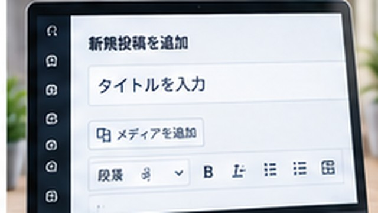

WordPressで記事を投稿する方法｜作成から公開まで解説
WordPressで記事を投稿する方法について、初心者向けに具体的な手順・例・注意点を交えて解説します。

結論
WordPressで記事を投稿する方法には、対象を確認してから手順を一つずつ進め、最後に結果まで確認します。
WordPressはテーマやプラグインで機能を拡張できますが、更新・バックアップ・セキュリティ管理も必要です。 操作前に対象サイトと権限を確認し、元に戻しにくい変更ではバックアップを取ります。
まず知っておきたいポイント
WordPressはテーマやプラグインで機能を拡張できますが、更新・バックアップ・セキュリティ管理も必要です。 操作前に対象サイトと権限を確認し、元に戻しにくい変更ではバックアップを取ります。
初心者のうちは用語を丸暗記する必要はありません。「何のための機能か」「自分の作業ではどこで使うか」まで分かれば、別の画面やサービスでも応用しやすくなります。
WordPressで記事を投稿する手順
- WordPress管理画面へログインします。
- 左メニューの「投稿」から「新規投稿を追加」を開きます。
- タイトルと本文を入力し、必要に応じて見出し・画像・リンクを追加します。
- カテゴリ、アイキャッチ画像、URLなどを確認します。
- プレビューでPC・スマートフォン表示を確認します。
- 「公開」を押し、公開URLを実際に開いて記事が表示されることを確認します。
環境によって確認場所が違う
- レンタルサーバー・FTP：アップロード先のディレクトリ、ファイル名、大文字小文字、更新日時を確認します。
- GitHub Pages：リポジトリのcommitだけでなく、Pages/Actionsのデプロイ結果まで確認します。
- WordPress：管理画面の設定に加えて、キャッシュ・最適化系プラグインやサーバー側設定の影響も考えます。
- Netlifyなどのホスティング：最新デプロイが成功しているか、公開対象のブランチやビルド設定が正しいか確認します。
使っていない環境の手順まで全部試す必要はありません。自分の公開方法に該当する部分だけ確認してください。
よくある失敗・注意点
- 操作するアカウントやサイトを取り違えたまま設定を変更する。
- 一度に複数の設定を変えて、どの変更が効いたのか分からなくなる。
- 保存・commit・公開・デプロイなど、最後の反映工程を確認せず「変わらない」と判断する。
- パスワード、APIキー、個人情報などを公開ファイルやスクリーンショットへ含める。
元に戻しにくい操作では、変更前の値やファイルを残してから進めると安全です。
よくある質問
WordPress自体は無料？
WordPressソフトウェア自体は無料で利用できますが、自分で運営する場合はレンタルサーバーや独自ドメインなどに費用がかかることがあります。
設定を変える前にバックアップは必要？
テーマ・プラグイン・PHP・データベースなどへ影響する変更では、問題が起きたとき戻せるようバックアップを取っておくのがおすすめです。
次に読むと分かりやすい記事
- WordPressの使い方｜初心者向けに基本操作をわかりやすく解説
- WordPressの初期設定まとめ｜サイト開設後に最初にやること
- WordPressで画像を挿入する方法
- WordPressでリンクを貼る方法｜内部リンク・外部リンクを解説
まとめ
WordPressで記事を投稿する方法では、用語だけでなく実際に何を確認・操作すればよいかまで押さえることが大切です。
この記事の手順を試すときは、自分の環境に該当する部分だけ進め、最後に結果を確認してください。うまくいかない場合は、直前の変更と表示されたエラーを手掛かりに一つずつ切り分けましょう。

企業の情報システム・DX推進・マーケティング業務などを経験。PC・Webサービス・業務自動化など、実際に試して分かったことを初心者向けに解説しています。
運営者情報を見る →